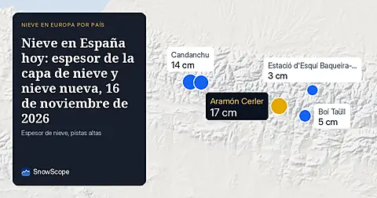

Parte de nieve por país · Nieve en Europa por país
Parte de nieve por país · Nieve en Europa por país: todos los partes de SnowScope, del más reciente al más antiguo. Cada parte está fechado y usa el mapa de nieve, la previsión y las estaciones de medida del día.
Partes de nieve · Nieve en Europa por país
martes 17 de noviembre de 2026
lunes 16 de noviembre de 2026

Nieve en Europa por país · 16 de noviembreEstado de la nieve en Andorra, 16 de noviembre de 2026: estaciones, nieve nueva y próximos días
Nieve en Andorra el 16 de noviembre: manto de nieve, nieve nueva, espesor por altitud, próximos días y mejores estaciones.

Nieve en Europa por país · 16 de noviembreNieve en España hoy: espesor de la capa de nieve y nieve nueva, 16 de noviembre de 2026
Nieve en España el 16 de noviembre: manto de nieve, nieve nueva, espesor por altitud, próximos días y mejores estaciones.
SnowScope en tu móvilLa nieve de cada estación, alertas de nieve polvo y el mapa 3D, gratis.
Descargar la app